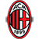
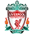
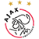
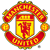

|
Real Madrid |
14 Champions
(1955–56, 1956–57, 1957–58, 1958–59, 1959–60, 1965–66, 1997–98, 1999–00, 2001–02, 2013–14, 2015–16, 2016–17, 2017-18 e 2021-22) |
O clube com mais troféus da Liga dos Campeões é o Real Madrid, que ganhou a competição 14 vezes. |
 |
|  |
Milan |
7 Champions (1962–63, 1968–69, 1988–89, 1989–90, 1993–94, 2002–03 e 2006–07) |
o Milan disputou 11 finais da Champions League, com apenas quatro derrotas. Ou seja, o clube italiano é o segundo com mais títulos de Liga dos Campeões, com sete conquistas. |
 |
 |
Bayern München |
6 Champions (1973–74, 1974–75, 1975–76, 2000–01, 2012–13 e 2019–20) |
O Bayern é o único time da história da Champions a vencer todas as partidas (11 no total) na campanha do título. O clube é o décimo campeão invicto da competição – o último foi o Manchester United na temporada 2007-2008. |
 |
|  |
Liverpool |
6 Champions (1976–77, 1977–78, 1980–81, 1983–84, 2004–05 e 2018–19) |
Hexacampeão da Champions, o Liverpool vem retomando o protagonismo europeu desde a chegada do técnico alemão Jürgen Klopp, na temporada 2015-16. Os bons resultados culminaram com a conquista da Liga dos Campeões em 2018-19, com vitória de 2 a 0 sobre o Tottenham na final. |
 |
 |
Barcelona |
5 Champions (1991–92, 2005–06, 2008–09, 2010–11 e 2014–15) |
No que diz respeito ao futebol internacional, o clube sagrou-se vencedor da Liga dos Campeões da UEFA cinco vezes, e cinco triunfos da Supercopa da UEFA e quatro a Taça dos Clubes Vencedores de Taças, três a Taça das Cidades com Feiras, e por último três a Copa do Mundo de Clubes da FIFA. |
|
|  |
Ajax |
4 Champions (1970–71, 1971–72, 1972–73 e 1994–95) |
O Ajax teve como ponto alto a década de 1970 quando, liderado pelo gênio Johan Cruijff, conquistou três taças da UEFA Champions League e um Mundial. |
 |
|  |
Manchester United |
3 Champions (1967–68, 1998–99 e 2007–08)
|
Em 1968, se tornou o primeiro clube inglês a vencer a Copa dos Campeões, atual Liga dos Campeões, batendo o Benfica por 4–1, ganhando a segunda Liga dos Campeões em 1999, e a terceira em 2008. O United ultrapassou o seu rival Liverpool em conquistas no ano de 2011, ao atingir a marca de 19 títulos do Campeonato Inglês. |
|
 |
Inter de Milão |
3 Champions (1963–64, 1964–65 e 2009–10) |
Fora da Itália, o clube também teve sucesso em torneios europeus e mundiais, tendo ganho três vezes a Liga dos Campeões, em 1963–64, 1964–65 e 2009–10. |
|
 |
Chelsea |
2 Champions (2011–12 e 2020–21) |
Conquistou o Mundial de Clubes da FIFA em 2021, a Liga dos Campeões da UEFA em 2012 e 2021, a Liga Europa da UEFA em 2013 e 2019, a Recopa Europeia da UEFA em 1971 e 1998 e a Supercopa da UEFA em 1998 e 2021. |
|
|
Nottingham Forest |
2 Champions (1978–79 e 1979–80) |
O Nottingham Forest Football Club é um clube inglês da região de Nottingham, Midlands Orientais. Venceu a Premier League 1 vez e a Liga dos Campeões por 2 ocasiões. O clube é frequentemente referido simplesmente como Forest, nome presente no símbolo do clube. |
 |
Juventus |
2 Champions (1984–85 e 1995–96) |
Juventus Football Club, é um clube de futebol italiano, também conhecida como Juventus de Turim, Juve ou ainda A Velha Senhora. A Juve é a maior detentora de scudettos do futebol italiano com 36 títulos internos. |
|
 |
Porto |
2 Champions (1984–85 e 1995–96) |
O FCP ganhou dois títulos da Liga dos Campeões da UEFA (em 1987, como a Taça dos Campeões Europeus, e em 2004), dois títulos da Liga Europa da UEFA (em 2003, como Taça UEFA, e em 2011), uma Supertaça Europeia (em 1987) e duas Taças Intercontinentais (em 1987 e 2004), totalizando sete troféus internacionais. |
 |
|
Benfica |
2 Champions (1960–61 e 1961–62) |
O Sport Lisboa e Benfica ComC • MHIH • OB é um clube multidesportivo português fundado em 1904 e sediado na freguesia de São Domingos de Benfica, em Lisboa. Foi campeão nacional de futebol em 38 temporadas e venceu a Liga dos Campeões 2 vezes. |
 |
Borussia Dortmund |
1 Champions (1996–97) |
o Borussia saiu da sombra dos grandes times da Alemanha e virou um dos gigantes no país graças a conquista da Liga dos Campeões da UEFA de 1997 |
|
|
Hamburgo |
1 Champions (1982–1983) |
O maior título da história do Rothosen foi a UEFA Champions League de 1982–83, quebrando o domínio dos ingleses que era de seis anos consecutivos vencendo a competição. |
|
Olympique de Marselha |
1 Champions (1992–93) |
Fundado em 1899 por René Dufaure de Montmirail, é o mais bem sucedido clube da França, sendo o único detentor de um título da Liga dos Campeões da UEFA, em 1992–93, além de nove Campeonatos Franceses e dez Copas da França. |
 |
 |
Manchester City |
1 Champions |
Uma das maiores potências do futebol europeu atual, o Manchester City finalmente conquistou sua primeira Champions League na temporada 2022/23. Na final disputada na Turquia, a equipe comandada por Pep Guardiola bateu o time da Inter de Milão por 1 a 0, com um gol do espanhol Rodri. |
|
|
Aston Villa |
1 Champions (1981–82) |
O Aston Villa tem nove partidas seguidas sem derrotas: são sete vitórias e 2 empates. Com essa arrancada, a equipe sonha em voltar à Champions League, torneio que venceu em 1982 quando ainda se chamava Copa dos Campeões da Europa. |
|
Celtics |
1 Champions (1966–67) |
Em 1967, o Celtic tornou-se o primeiro clube britânico a conquistar a Liga dos Campeões, que até então só havia sido conquistada por equipas italianas, portuguesas e espanholas, sendo esta a sua maior conquista. Em 1970 o Celtic chegaria novamente a uma final da Liga dos Campeões, tendo sido batido pelo Feyenoord no prolongamento. |
 |
|
Feyenoord |
1 Champions (1969–70) |
Feyenoord Rotterdam, ou apenas Feyenoord, é um clube de futebol neerlandês, com sede em Roterdã, Holanda. É um dos principais clubes dos Países Baixos, ganhando 16 vezes a Eredivisie, destacou-se na temporada 1969–1970, com a conquista da Liga dos Campeões da UEFA, e na temporada 2002 com o 2ª título na Taça UEFA. |
|
|
Steua Bucareste |
1 Champions (1985–86) |
conhecido como Steaua ou apenas FCSB é um clube de futebol da Roménia sediado em Bucareste. Foi fundado em 7 de junho de 1947 e seu maior título é a UEFA Champions League de 1985-86 |
 |
|
Estrela Vermelha |
1 Champions (1990–91) |
Em termos de títulos, a vantagem também é vermelha e branca, com um Mundial Interclubes, uma Liga dos Campeões, um Campeonato Sérvio, cinco da Sérvia e Montenegro, 19 Campeonatos Iugoslavos, três Copas da Sérvia, nove Copas da Sérvia e Montenegro e 12 Copas da Iugoslávia. |
 |